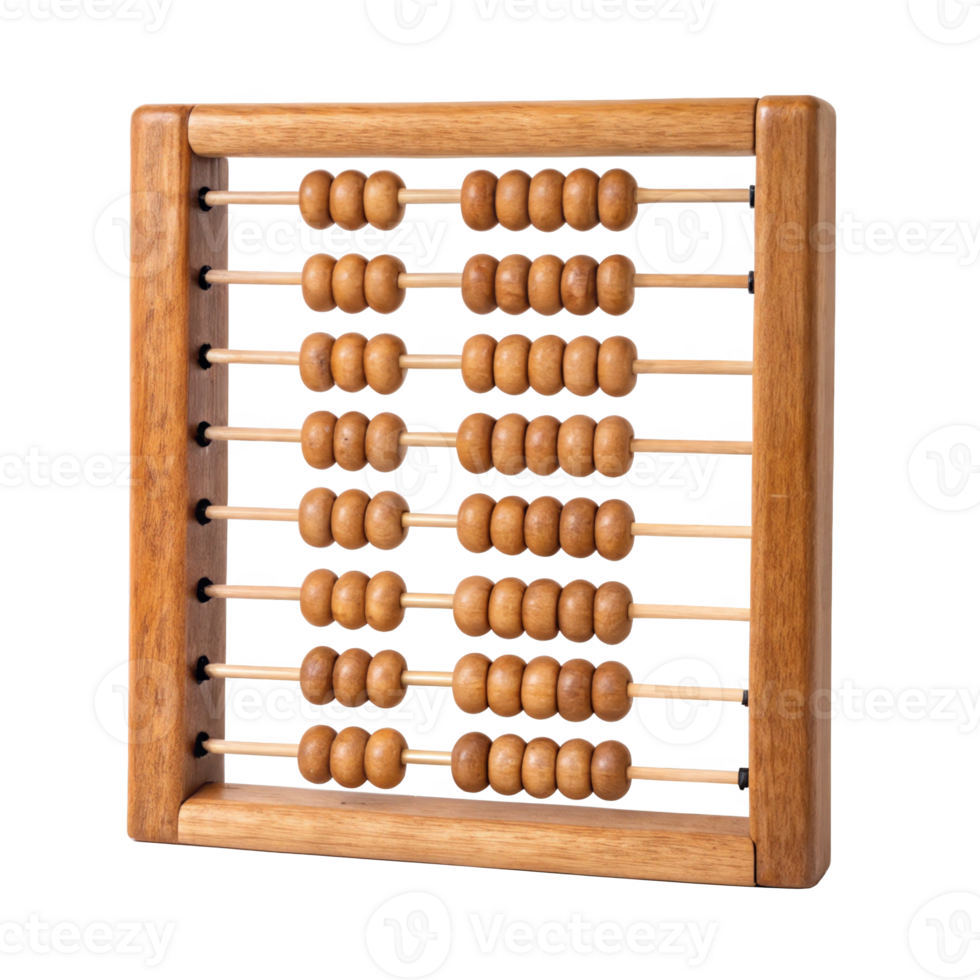
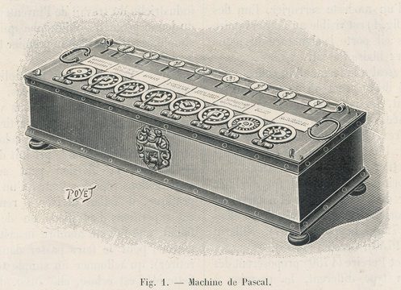

Antes da existência dos computadores, os humanos já tinha a nescessidade de realizar calculos, nisto surgiu o ábaco.

Com origem na mesopotâmia a 5.500 a.C. sugiu para realizar contagens, sendo exencial e revolucionário
Criado pelo matemático francês Blaise Pascal, foi a primeira calculadora mecânica do mundo. Funcionava por meio de um sistema de engrenagens e rodas dentadas que giravam para somar e subtrair valores automaticamente.
